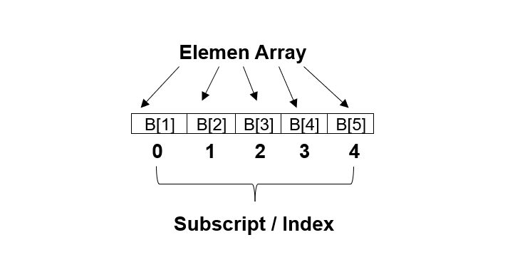
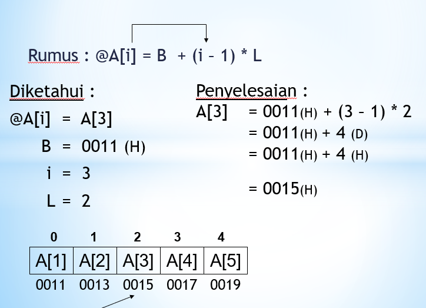

Fungsi dan Pengertian Array
.jpg?1676969394592)
Setelah mempelajari dan mengenal apa itu yang dimaksud tipe data yang memiliki bagian macam-macam jenis tipe data pada tutorial sebelumnya, di artikel tutorial kali ini kita akan belajar tentang Fungsi dan Pengertian Array.
Pemahaman tentang tipe data array sangat penting terutama bagi Anda yang sedang belajar bahasa pemrograman untuk menjadi seorang programmer. Dengan mengetahui tipe data array, anda dapat menganalisis informasi atau data yang Anda dapatkan dan memilih tipe data yang tepat untuk menyimpan data tersebut.
Pengertian Tentang Tipe Data Array
Data Array adalah tipe data yang memiliki tipe data yang lain. Data Array ini proses penyimpanan data ke variabel jadi lebih mudah dan terutama adalah apabila data tersebut jumlahnya banyak. Array juga termasuk salah satu tipe data yang cukup terstruktur, yaitu terdiri dari beberapa komponen yang memiliki tipe data yang sama.
Definisi Pada Array
- Array / Larik: Struktur Data sederhana yang dapat didefiniskan sebagai pemesanan alokasi memory sementara pada komputer
- Terurut: Dapat diartikan bahwa elemen tersebut dapat diidentifikasi sebagai elemen pertama, elemen kedua dan seterusnya sampai elemen ke-n
- Homogen: bahwa setiap elemen dari sebuah array tertentu haruslah mempunyai tipe data yang sama.
- Larik adalah tipe data yang berisi beberapa data yang ditampung dalam satu variabel yang memiliki tipe data yang sama.
- Masing masing data yang tertampung dalam sebuah larik akan ditandai sebagai elemen pertama sampai ke - n.
- larik dapat dibuat beberapa dimensi, misalnya untuk menggambarkan matrix kita perlu menggunakan larik 2 dimensi.
Karakteristik Pada Array
Array merupakan konsep yang penting dalam pemrograman, karena array memungkinkan untuk menyimpan data maupun referensi objek dalam jumlah banyak dan terindeks. Berikut adalah beberapa karakteristik pada array:
- Bertipe data yang sama (Bersifat Homogen)
- Kumpulan dari nilai data
- Bisa berisi nilai yang sama atau berbeda
- Diakses secara random
- Diakses menggunakan suatu indeks
Jenis Tipe Data Array
Terdapat beberapa jenis dari tipe data array. Setiap jenis tipe data array memiliki fungsi dan kegunaan yang berbeda.
- Array Satu Dimensi
Array satu dimensi merupakan salah satu tipe data yang paling banyak digunakan.
Contohnya adalah digunakan untuk membuat daftar sejumlah orang sesuai dengan
usianya, maka syarat yang harus dimasukkan dalam menentukan elemennya yaitu usia.
Anda bisa memakai rumus kueri untuk menentukannya.
Array dimensi satu biasa juga disebut sebagai vektor. Bentuk umum pendeklarasian
array satu dimensi adalah sebagai berikut :
tipe_data nama_variable
[jumlah_elemen]
Sebagai contoh:
int B[3];
Seandainya
variable B akan kita beri nilai saat pendeklarasian (inisialisasi), maka contoh
penulisannya adalah sebagai berikut:
int B[3] = {2,5,4,8,1,3,7,1,10,6};
Penggambaran secara logika:

Perlu kalian ketahui, ruang memori yang dibutuhkan untuk deklarasi array tersebut
adalah 40 byte, yang berasal dari 10 x 4 byte (4 merupakan ukuran tipe data int
sedangkan 10 merupakan jumlah elemen array).
Mengakses Array Satu Dimensi
Cara yang dipakai untuk mengakses elemen array satu dimensi adalah dengan menuliskan
indeksnya. Contohnya jika kita ingin mengambil nilai yang terdapat pada elemen ke-8
dan menampung nilai tersebut kedalam sebuah variabel yang bertipe int juga (misal
int A), maka kita perlu menuliskan kode seperti berikut ini:
A = B[7];
Kenapa 7, bukan 8? ingat karena indeks array selalu dimulai dari 0 sehingga
untuk mengakses elemen ke-8, maka indeks yang kita butuhkan adalah 8-1, yaitu 7.
Pemetaan Array Dimensi Satu Ke Storage
Dalam
pemetaan (mapping) array dimensi satu kedalam storage terdapat rumus yaitu :
@A[i] = B + (i - 1) * L
@A[i] : Merupakan posisi array yang dicari
B : Posisi awal index di memori komputer
i : Subskrip atau indeks array
yang dicari
L : Ukuran atau besar memori suatu tipe data
Contoh
Studi Kasus :
Suatu array A dideklarasikan dengan int A[5]; dengan
alamat
awal index berada di 0011 (H), dan ukuran memori tipe data integer = 2. Tentukan
berapa alamat array A[3] ?
Jawab :

Deklarasi Program Array Satu Dimensi Dengan
C++
Contoh program menggunakan Array Satu Dimensi yang
didalamnya terdapat proses deklarasi sekaligus inisialisasi array (pengisian elemen
array) dan proses menampilkan nilai yang terdapat pada elemen array.
#include <iostream> |
Manfaat penggunaan Array dalam program
- Memudahkan pengelompokan data dengan tipe serupa dalam satu variabel
- Memudahkan akses data dengan menggunakan indeks yang unik
- Mempercepat kinerja program karena memungkinkan pengolahan data secara efisien
- Memudahkan pengolahan data yang kompleks, seperti data matriks atau tabel
Dengan manfaat-manfaat tersebut, array menjadi hal yang sangat penting dalam pemrograman. Oleh karena itu, penggunaan array sangat berpengaruh penting dalam program yang dibuat.
Lanjutan
Itulah pengertian dan beberapa contoh struktur data. Struktur data adalah cara bagaimana data dapat disimpan dan disusun secara terstruktur. Sehingga data akan terorganisir dan proses pencariannya menjadi lebih mudah.
Setelah membaca tulisan diatas tentang Pengenalan Struktur Data. Selanjutnya kita akan dijelaskan dari pembahasan si algoritma sebelum lanjut ke materi dari Struktur Data. Apa itu algoritma? Bisa dilihat pada tutorial Belajar Bareng 2: Memahami Konsep Algoritma klik disini untuk membaca tutorial Algoritma.